Recipes
Try proven recipes from our mixes — from Sunday dumplings to no-bake desserts.
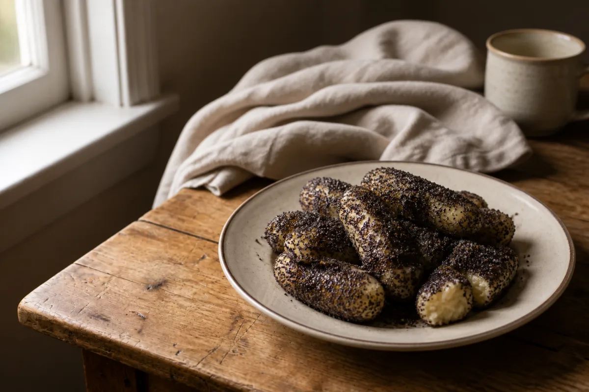
Poppy-seed rolls (šišky s mákem)
A traditional sweet supper from potato dough: rolls coated in poppy seeds and sugar, drizzled with melted butter.
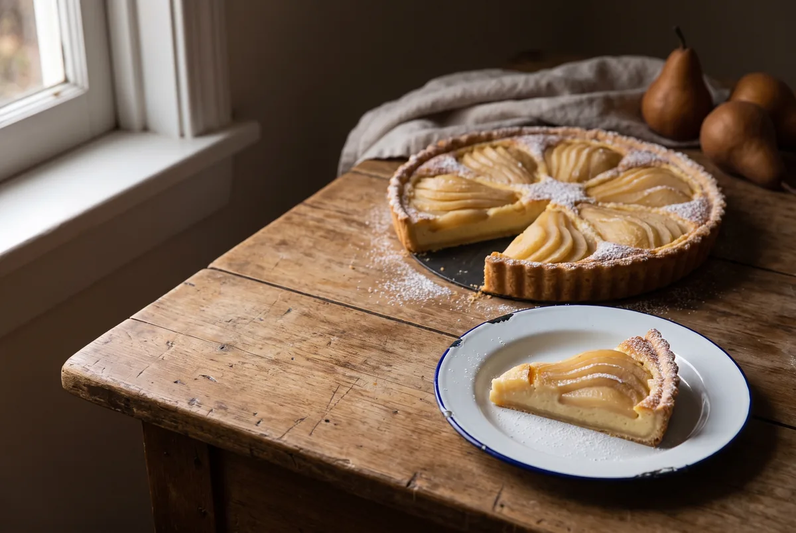
Pear cake with vanilla pudding
A cake your children will enjoy making with you. Baking is fun twice — once preparing, once tasting.
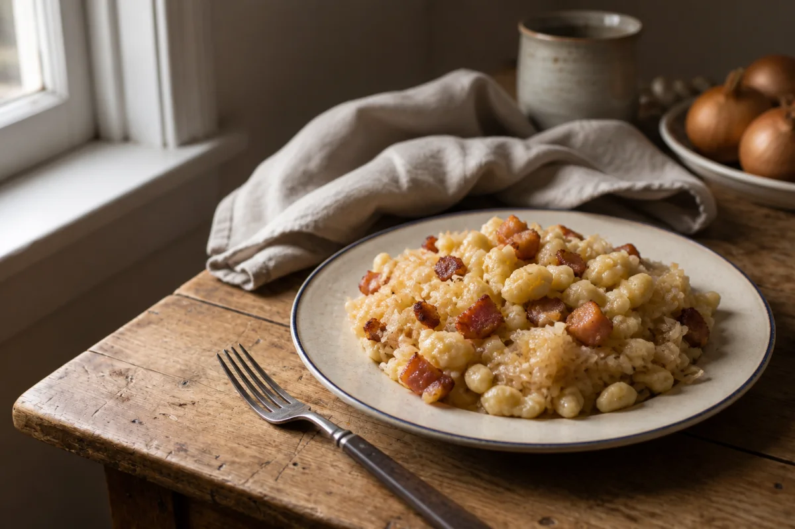
Strapačky with cabbage and bacon
A Slovak classic from hairy-dumpling mix — halušky with sauerkraut and crispy bacon.
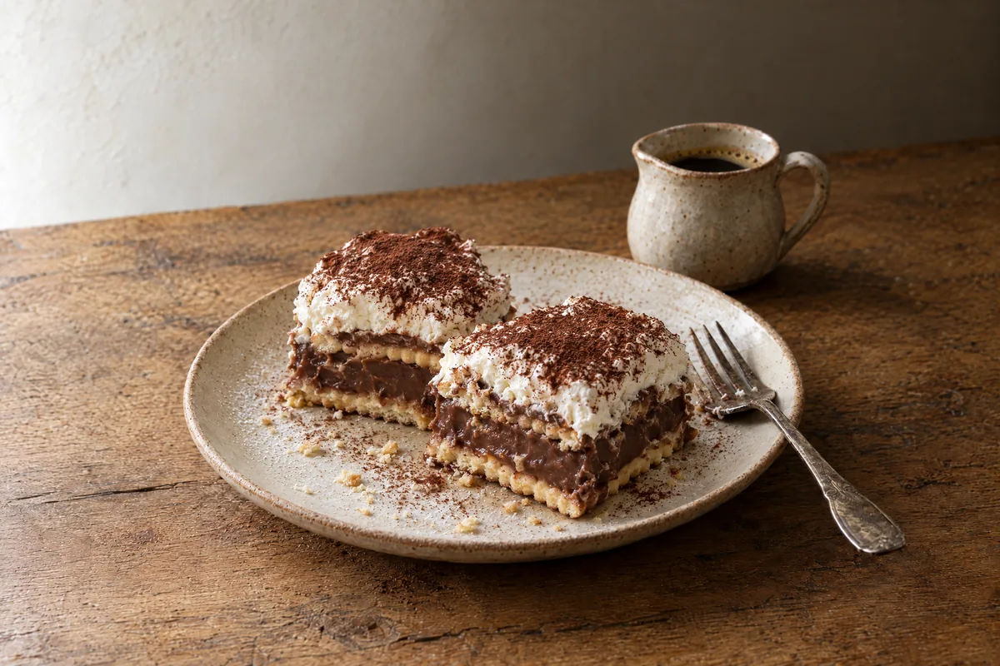
Bebe biscuit slices with chocolate pudding
Want to treat your guests but you’re no Jamie Oliver? These no-bake biscuit slices are for everyone.
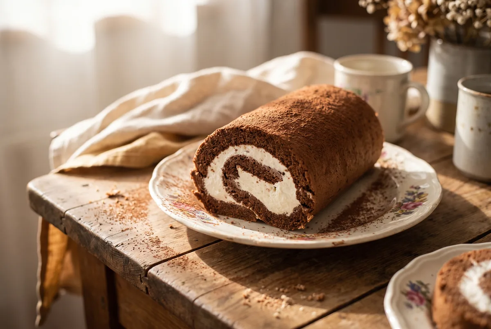
Whipped cream roulade
A light dessert in half an hour: the contrast of slightly bitter cocoa and gently sweet whipped cream. No flour — so no gluten either.

Homemade gingerbread (perník)
Cup-measure gingerbread you’ll love for its easy preparation and great taste. No scales needed — a mug is enough.
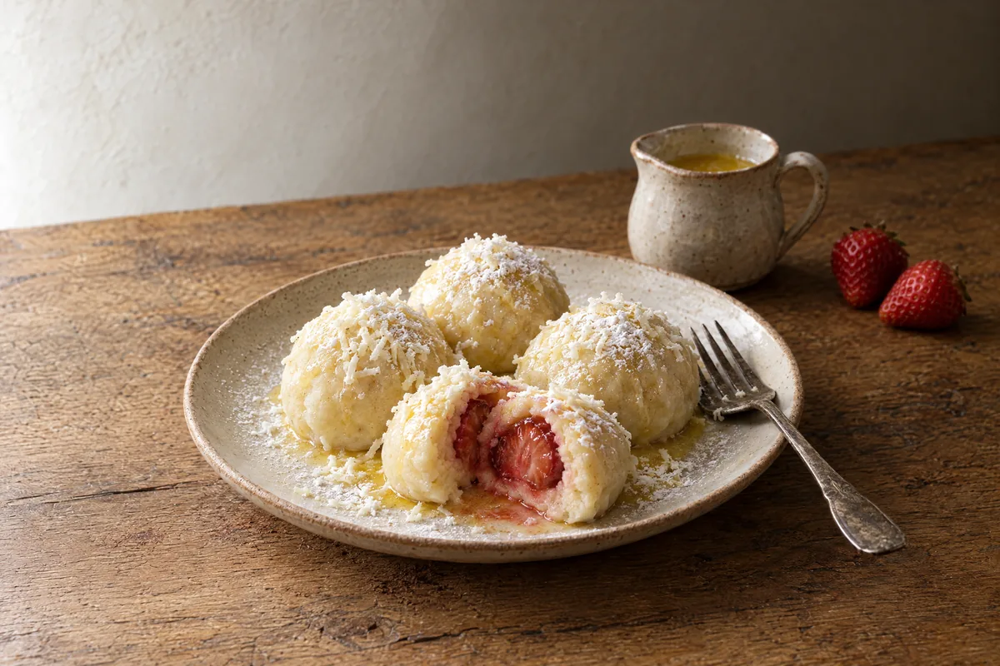
Potato-and-curd dumplings with strawberries
Summer is here, and with it ripening strawberries. A simple 20-minute recipe that delights the sweetest tooth.
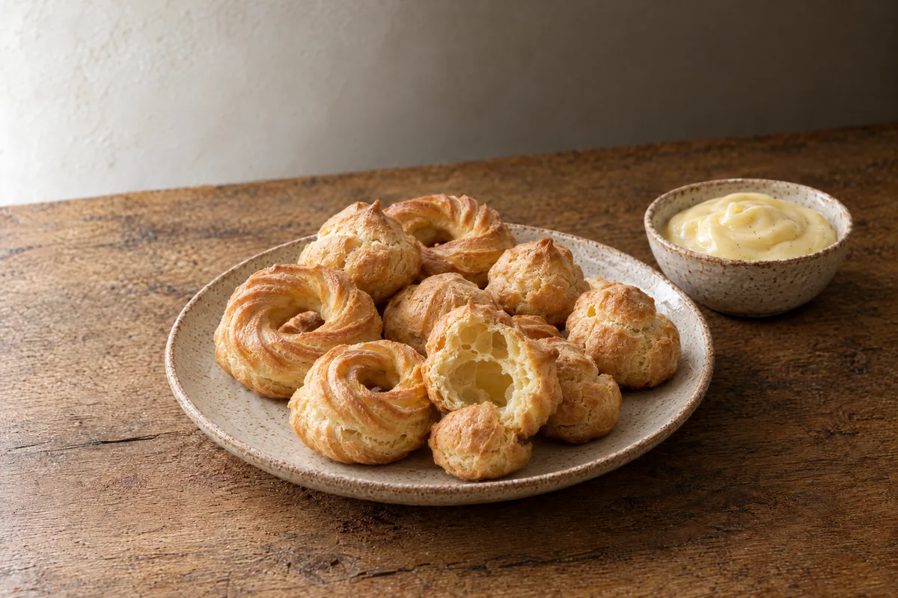
Quick choux wreaths or puffs
One choux pastry for both věnečky and větrníčky: extra butter and a 250 °C start. About 80 pieces on two trays.
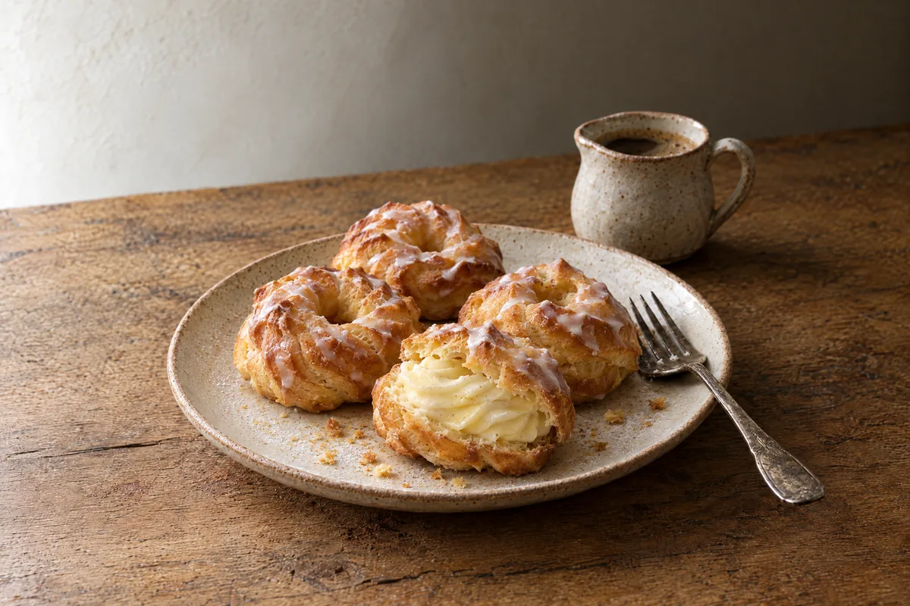
Choux wreaths with vanilla cream
Classic věnečky from choux pastry with vanilla buttercream and rum glaze. About 20 pieces.
Cream horns (kremrole)
Flaky pastry tubes filled with glossy Italian meringue. About 35–40 pieces; you will need metal cream-horn tubes.
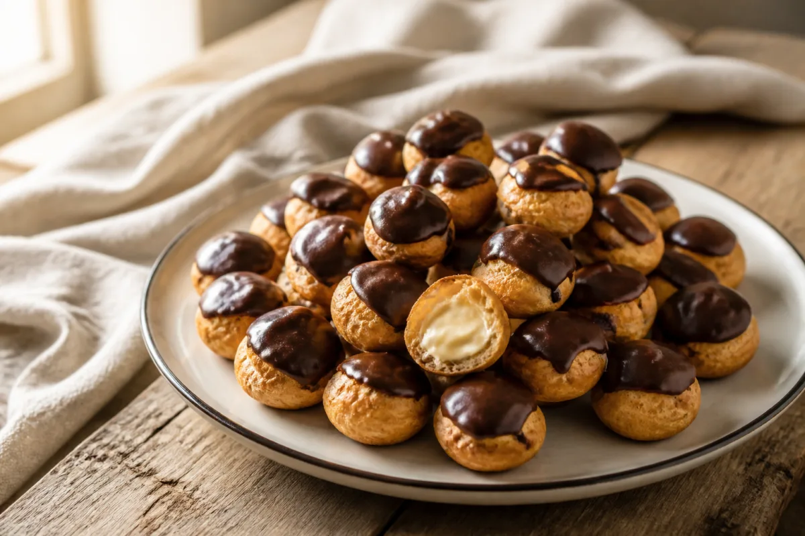
Mini choux buns (minivětrníčky)
Mini větrníčky from choux pastry with a butter-pudding-curd cream and chocolate glaze. About 40–45 pieces.
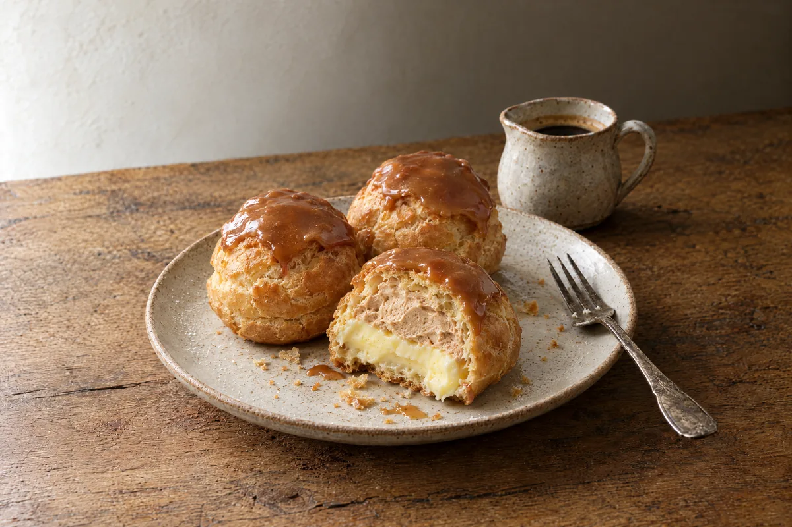
Caramel větrníky
Větrníky with vanilla pudding cream, caramel whipped cream and caramel glaze. About 24 medium pieces.
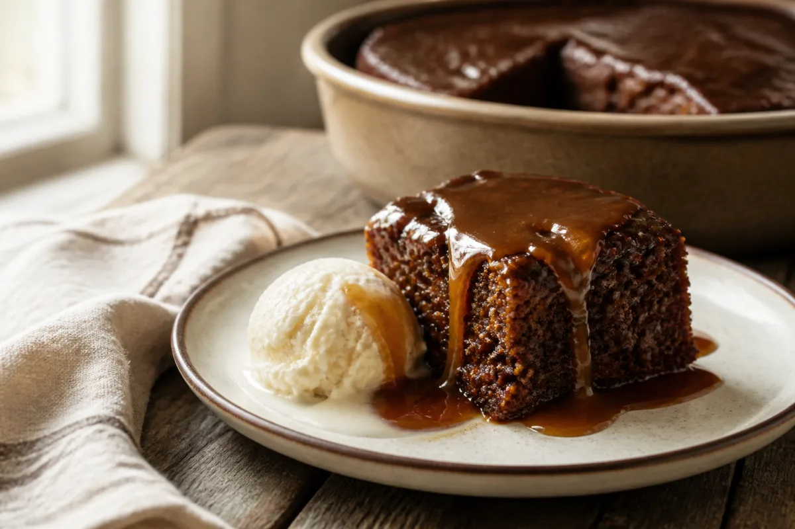
Irish sticky toffee pudding
A moist date pudding with Dutch-process cocoa and Baileys, finished with a salty toffee sauce. Serves 6.